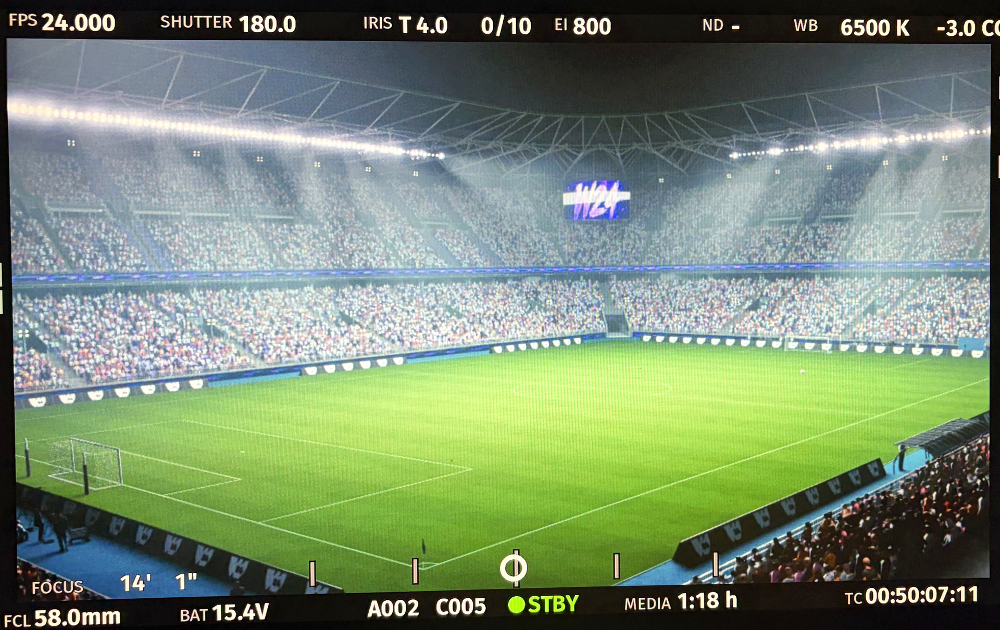

축구 스타디움 — VAT 군중
역할 보기 +
축구 스타디움 — VAT 군중
역할 보기 +관중 애니메이션을 텍스처로 구워 재생한 작업.
관중 35,965명을 스켈레탈 메시 대신 VAT와 인스턴싱으로 배치했다. 관중 수가 늘어날 때 같은 조건에서 드로우콜이 함께 늘어나는 것을 억제했다. 화면의 카메라 FPS 표시는 이 기법의 별도 성능 측정값으로 사용하지 않는다.
관련 기술: 머티리얼 시스템ArtPortfolio 6쪽 · 경력기술서 2쪽